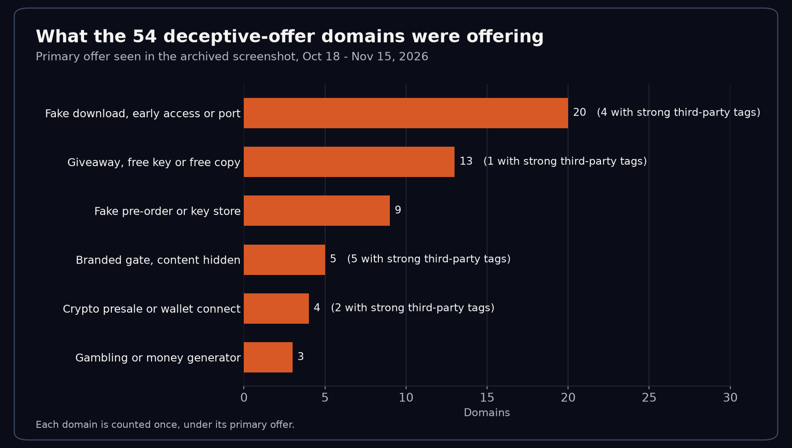
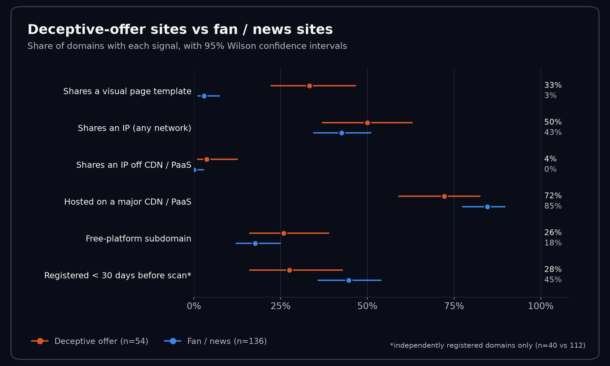

Key finding: Of 283 relevant GTA VI-themed domains, 54 (19%, 95% CI 15-24%) showed a documented deceptive offer, such as a fake download, a fake pre-order store or a "free key" giveaway. These deceptive sites were not more likely than fan sites to share an IP address (50% vs 43%; difference +7 points, CI −8 to +23). Nearly all shared IPs in the sample are Cloudflare, Vercel, Netlify or EdgeOne edge addresses used by thousands of unrelated customers. The signal that did separate the groups was reuse of a visually identical page template across several domains: 33% of deceptive-offer domains versus 3% of fan and news domains (difference +30 points, 95% CI +19 to +44; Fisher's exact p < 0.001). The gap holds when uncertain labels are counted as deceptive and when only high-confidence labels are used.
Background
Grand Theft Auto VI is due on November 19, 2026, for PlayStation 5 and Xbox Series X|S. No PC or mobile version has been announced, and there is no public beta or early-access build. Security vendors and the gaming press have spent much of 2026 warning about sites that exploit that gap. Malwarebytes reported paid "VIP early access" pages, Bitdefender flagged fake "beta" downloads promoted through social ads, and later reporting described further waves of early-access and pre-order lures ahead of launch (sources).
Those warnings generally describe individual examples or rely on vendor telemetry that outsiders cannot inspect. This project asks a narrower question that can be checked with public data:
Among publicly scanned GTA VI-themed websites, what share show a documented deceptive offer, and do those sites reuse infrastructure or page templates more often than clearly identified fan and news sites?
Data & methodology
Source. The
urlscan.io search API,
queried without an API key on November 16, 2026. Every response reported
search_date_limit_days: 30, so the study window is the
29 completed UTC days from October 18 to November 15,
2026. Eleven narrow query variants were run, each restricted
to that window:
- domain prefixes:
page.domain:gta6*,gtavi*,gta-6*,gta-vi*,gta6-*,gtavi6*,grandtheftauto6*, andtask.domain:gta6* - page titles:
"GTA VI","GTA 6","Grand Theft Auto VI","Grand Theft Auto 6"
Leading-wildcard queries (for example *gta6*) are
refused on the free tier (HTTP 403), and verdict and brand fields
cannot be searched without a paid plan, so neither is used. Results
were paginated with search_after. On this tier,
has_more returned false even when a full
page of 100 came back, so the collector keeps paging until a short
page is returned. Every query is logged with its retrieval time and
returned history limit (query_log.csv).
Rate-limit headers (30 searches per minute) and HTTP 429 back-off
were respected.
Deduplication. The 719 returned rows collapse to
444 unique scans (the same scan often matches several
queries). These map to 335 registrable domains using the
Public Suffix List, including its private section. As a result, each
*.pages.dev, *.netlify.app or
*.vercel.app deployment counts as its own site. Tencent's
EdgeOne Pages (edgeone.dev) and Yandex Cloud website
hosting are missing from the PSL snapshot used, so they were added
manually. Without that fix, 15 separate EdgeOne deployments would have
been merged into a single "domain". The earliest scan per domain
represents that domain; the full scan-level table is published too.
What could and couldn't be retrieved. Unauthenticated requests for the archived result JSON and DOM returned HTTP 403 ("You're not logged in"), so outbound links and redirect chains could not be compared. Archived screenshots were public, and 315 of the 335 domains had one. No live suspicious page was visited, and nothing was downloaded or executed. All labelling used urlscan's archived screenshots, page titles and submitter tags.
Labelling rubric. Each domain received one label from its archived screenshot and title. A GTA-related name, a shared host, or a threat tag on its own was never enough to assign a deceptive label.
| Label | Rule | Domains |
|---|---|---|
| Official | Rockstar, Take-Two, or platform-holder page | 4 |
| Fan / news | Press, wiki, map, countdown, community or tool with no deceptive offer | 136 |
| Suspicious offer | Screenshot shows an offer that cannot be genuine (a PC or mobile build, early access, free keys or copies, an "official" pre-order on a lookalike domain, a retailer clone, or in-game money generators) | 42 |
| Corroborated malicious | A deceptive offer or branded gate and a strong third-party threat tag on the scan (malicious, scam, drainer, threat, or phishing not paired with possiblethreat) | 12 |
| Meme token | GTA VI-themed crypto token with no claim of game access | 43 |
| Commerce | Established retailer, ticketing, merchandise, or clearly disclosed paid product | 18 |
| Uncertain | Ambiguous purpose, tag conflicts with content, or title-only evidence | 28 |
| Out of scope | Parked, error, placeholder, unrelated, or no archived content | 52 |
The analysis compares the 54 deceptive-offer domains (suspicious + corroborated) with the 136 fan/news domains. Fan and news sites are a descriptive baseline, not a matched control.
Re-review. A seeded random 20% of the 283 relevant domains (57 domains) was re-labelled in shuffled order from the screenshot and title, with the first-pass labels hidden. The two passes agreed on 55 of 57 (96.5%; Cohen's κ = 0.95). In both disagreements the second pass was more cautious: a giveaway site and an EdgeOne image-only page moved to "uncertain". Both passes were made by the same reviewer, so this measures consistency rather than independent agreement.
Signals compared.
- Shared IP: the page's IP is shared with at least one other relevant domain.
- Shared IP off CDN/PaaS: the same, excluding major CDN and site-hosting networks (Cloudflare, AWS/Vercel/Netlify edges, Fastly/GitHub Pages, Google, Akamai, Microsoft, Tencent EdgeOne, Yandex Cloud). On those networks an IP is an anycast edge shared by thousands of unrelated customers.
- Visual template reuse: the domain belongs to a family of two or more sites with a visually identical page, identified during screenshot review. Exact-title matching is reported separately; it misses translated clones.
- New domain: registered fewer than 30 days before the first scan, computed only for independently registered domains. urlscan reports the platform's age for subdomain deployments, for example 1,436 days for every
*.edgeone.devsite.
Proportions use 95% Wilson intervals. Differences use Newcombe's hybrid score interval and two-sided Fisher's exact tests.
Finding 1: about one in five relevant sites made a deceptive offer

Among the 283 relevant domains, 54 (19.1%, CI 14.9-24.1%) made a deceptive offer. Including all 28 uncertain domains raises this to an upper bound of 82 (29.0%, CI 24.0-34.5%). Fan and news sites were the largest group (136, 48%), followed by GTA VI-themed meme tokens (43, 15%). Most token sites made no claim about game access, so they are not counted as deceptive offers.
The most common lure was a fake download, early-access build, or PC/mobile "port" (20 domains), often presented as an APK, a Windows installer, or a "Cyberleek" leaked build. These offers only work because the game has no PC or mobile release. The next most common were giveaways and "free code" pages (13), which typically ask for an email address, a console choice, a survey or Telegram membership before a "reveal". Then came fake pre-order stores (9). These include three pixel-level clones of a major Brazilian retailer's product page and stores on Rockstar-lookalike domains.
Finding 2: shared IPs don't distinguish the groups; shared templates do

| Signal | Deceptive | Fan / news | Difference (pp) | Fisher p |
|---|---|---|---|---|
| Visual template reuse | 18/54 (33.3%) | 4/136 (2.9%) | +30.4 [18.5, 43.8] | <0.001 |
| Shared IP, any network | 27/54 (50.0%) | 58/136 (42.6%) | +7.4 [−8.0, 22.5] | 0.42 |
| Shared IP, off CDN/PaaS | 2/54 (3.7%) | 0/136 (0.0%) | +3.7 [−0.1, 12.5] | 0.08 |
| Exact page title shared | 5/54 (9.3%) | 4/136 (2.9%) | +6.3 [−0.5, 17.1] | 0.12 |
| Major CDN/PaaS network | 39/54 (72.2%) | 115/136 (84.6%) | −12.3 [−26.4, 0.0] | 0.06 |
| Free-platform subdomain | 14/54 (25.9%) | 24/136 (17.6%) | +8.3 [−3.9, 22.4] | 0.23 |
| Registered <30 days before scan | 11/40 (27.5%) | 50/112 (44.6%) | −17.1 [−31.8, 0.6] | 0.06 |
Half the deceptive-offer domains shared an IP with another domain in the sample, but so did 43% of fan sites, and the difference is within noise. The reason is visible in the chart below. The biggest shared IPs are Cloudflare and AWS edge addresses holding fan sites, tokens and scams side by side. Outside CDN and site-hosting networks, only one pair of domains shared an IP, and both were deceptive: two fan-styled "GTA 6 Hub" pages with the same layout and a "Download page" button.
Template reuse is the clear difference. Six template families account for the 18 deceptive domains:
- three clones of a Brazilian retailer's GTA VI product page, on Netlify and lookalike domains;
- three Yandex Cloud pages with the same Telegram "free copy" giveaway in German, Dutch and Swedish;
- three "Cyberleek" terminal-style pages selling a supposed leaked build or token-gated demo;
- three pink "GTA 6 APK v8.1.5 Beta" download pages;
- four EdgeOne deployments showing only a GTA VI logo or cover-art splash (all tagged malicious by a third-party submitter);
- the "GTA 6 Hub" download pair.
The four fan sites in a template family are a map site mirrored on Cloudflare Pages and a countdown with its own Netlify preview, so each is one site deployed twice.

Sensitivity to labelling choices
| Deceptive group definition | n | Template reuse | Fan/news | Difference (pp) | p |
|---|---|---|---|---|---|
| Primary (suspicious + corroborated) | 54 | 33.3% | 2.9% | +30.4 [18.5, 43.8] | <0.001 |
| Including all uncertain domains | 82 | 30.5% | 2.9% | +27.5 [17.6, 38.3] | <0.001 |
| High-confidence labels only | 33 | 21.2% | 3.1% | +18.1 [6.6, 34.7] | 0.002 |
The template-reuse gap survives every definition. It shrinks when only high-confidence labels are kept, mainly because several template-family members (the Yandex giveaways, the EdgeOne splash gates, the "GTA 6 Hub" pair) were rated medium confidence. The shared-IP comparison is not significant under any definition. The comparison of new domains reverses direction: deceptive-offer domains were, if anything, less often freshly registered than fan sites (27.5% vs 44.6%). Many fan countdowns and maps went up in the final weeks before launch, while a cluster of deceptive domains was registered 55-71 days before first scan, in early-to-mid September. Full results: sensitivity.csv.
Finding 3: third-party tags are useful but noisy
22 relevant domains carried a strong third-party threat tag on at least one scan: 12 deceptive-offer sites, 8 uncertain, 1 meme token and 1 fan site. The overlap with deceptive offers is partly built in, because a strong tag is part of the "corroborated" label. The more useful observation is where tags and screenshots disagreed:
- All 15 EdgeOne deployments carried the same
phishing|malicioustag pair from one submission stream. Seven showed a fake download or a content-hiding GTA VI splash. Eight showed an ordinary-looking countdown, gallery or unrelated browser game and stayed "uncertain". The tagging looks platform- or pattern-driven rather than content-reviewed. - The same EdgeOne tags explain why "strong tag" is far more common among uncertain domains than among fan sites; the comparison in the chart above therefore leaves tags out.
- An automated feed tagged one fan editorial site
threat|phishingand several fan guidespossiblethreat|phishing, with nothing deceptive visible in their screenshots. - Most deceptive-offer sites (42 of 54) had no strong tag at all, including retailer clones and APK pages.
Tags work as a lead, but they are not a substitute for looking at the page.
Limitations & caveats
- Submission-biased sample, not a census. urlscan only contains pages someone chose to scan. Security researchers and automated feeds over-submit suspicious pages, while many fan sites are never scanned. The 19% figure describes this sample, not the GTA VI web as a whole or the scams people actually encounter.
- Keyword coverage. The prefix and title queries catch obvious lures (domains starting with
gta6, pages titled "GTA VI") and miss scams with generic names or titles. The free tier's ban on leading wildcards makes this worse. - 30-day window only. The free search history limit rules out year-over-year or pre-announcement comparisons. Scan dates are when a page was observed, not when the domain was registered, and repeated scans of a page are not new attacks.
- Limited evidence per domain. Labels rest on one archived screenshot, the page title and submitter tags. Result JSON, DOM and outbound links need an API key, so redirect chains, payment endpoints and download hosts, which would be the strongest common-operator evidence, could not be compared. Seven relevant domains had no screenshot and were labelled from title text alone (marked low confidence).
- Single reviewer. One reviewer assigned every label and judged template families by eye. The 20% blind re-review shows consistency (κ = 0.95), not independent agreement. The labels file is published so others can check or re-label.
- Shared hosting is not shared ownership. A shared IP, ASN or template is an infrastructure signal. Identical templates can come from a sold kit, an AI site builder or copy-paste, as easily as from one operator. This analysis does not attribute any site to a campaign or actor.
- No harm estimates. Nothing here measures victims, money lost, malware delivered, or causal impact.
Ethics & data handling
No live suspicious page was visited, no download was fetched or run,
and no URLs were submitted to any scanner; only existing public scans
were read. Published domains are defanged (example[.]com),
URL paths and query strings are removed (some carried tracking or
session tokens), and one personal fundraising page that matched a
title query is redacted and excluded. Raw urlscan responses and
screenshots are not redistributed; scan UUIDs are included so each
record can be looked up on urlscan.io.
Sources
- urlscan.io API documentation (search, pagination, rate limits)
- Grand Theft Auto 6 'VIP early access' scam sites are already popping up, Malwarebytes warns (PC Gamer)
- GTA VI fans beware: experts warn a new wave of scam websites is offering early access (TechRadar)
- Gamers beware: there's no such thing as a GTA VI beta version to download (Bitdefender)
- Fake GTA VI download sites push malware ahead of launch (Hackread)
- Public Suffix List
- Newcombe, R.G. (1998). "Interval estimation for the difference between independent proportions." Statistics in Medicine, 17(8), 873-890.
Data & code
Labelled domain table (defanged, with label, evidence, second-pass label and infrastructure fields): domains_labeled.csv. Scan-level table: scans.csv. Query log: query_log.csv. Results: group_metrics.csv, sensitivity.csv, offer_types.csv, label_counts.csv, agreement.csv, shared_infra_clusters.csv, title_clusters.csv, asn_by_group.csv.
Pipeline (Python, DuckDB, pandas, SciPy): collect.py queries urlscan and logs each request, prepare.py deduplicates scans and maps registrable domains, analysis.py computes every number on this page from the labels, and charts.py draws the figures. Re-running collection after mid-December 2026 will return a different 30-day window.